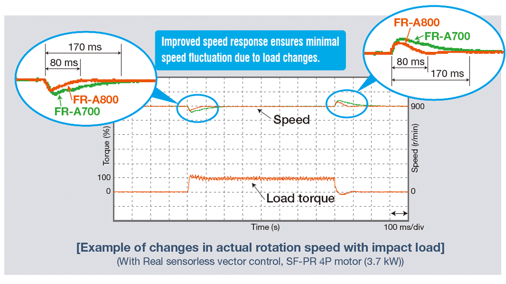
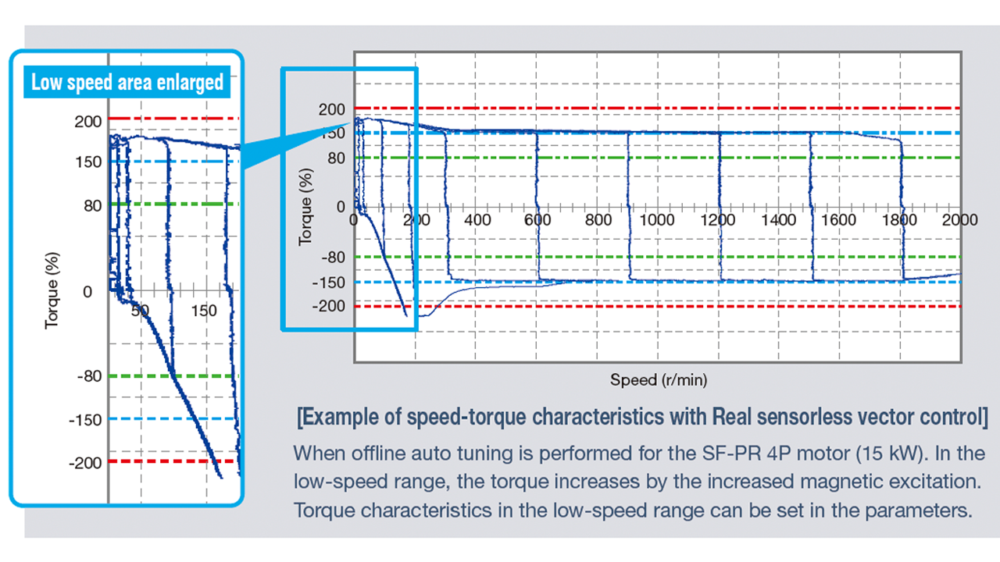

Inverters-FREQROL-A800 Plus Series -FREQROL-A800 Plus for CRANES- Mengejar kinerja drive terdepan

Mengejar kinerja penggerak terdepan
Respons tinggi
Respons kecepatan yang ditingkatkan memastikan fluktuasi kecepatan minimal untuk mempertahankan kecepatan konstan saat beban berfluktuasi.
- Respons kecepatan
Kontrol vektor tanpa sensor nyata 50 Hz*3 (A700: 20 Hz)
Kontrol vektor*4 130 Hz*5 (A700: 50 Hz)

Torsi tinggi pada kecepatan rendah
Inverter baru kami mewujudkan penanganan kargo yang lancar pada kecepatan rendah dan torsi tinggi untuk gerakan lambat dan stabil yang dibutuhkan untuk benda berat.
- Torsi awal (pada 0,3 Hz)
Kontrol vektor tanpa sensor nyata 200% (peringkat ND)
Kontrol vektor*4 200% (peringkat ND)
(150% dari pengaturan awal untuk 5,5K atau lebih tinggi)

- *3Pada 3,7 kW tanpa beban Berbeda tergantung pada kondisi beban dan kapasitas motor.
- *4Kontrol vektor tersedia saat opsi yang kompatibel dengan kontrol vektor dipasang.
- *5Opsi (FR-A8AP, FR-A8AL, atau FR-A8TP) diperlukan.